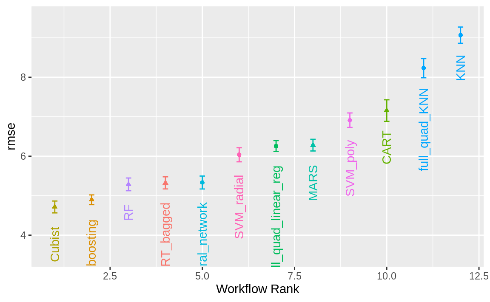
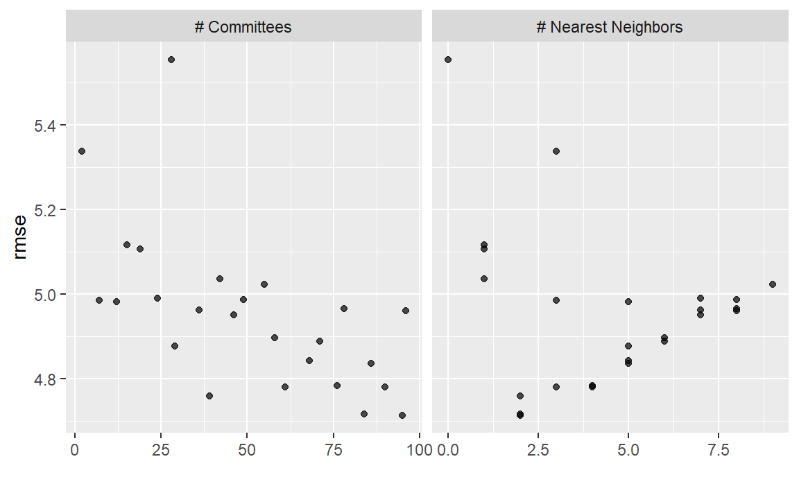
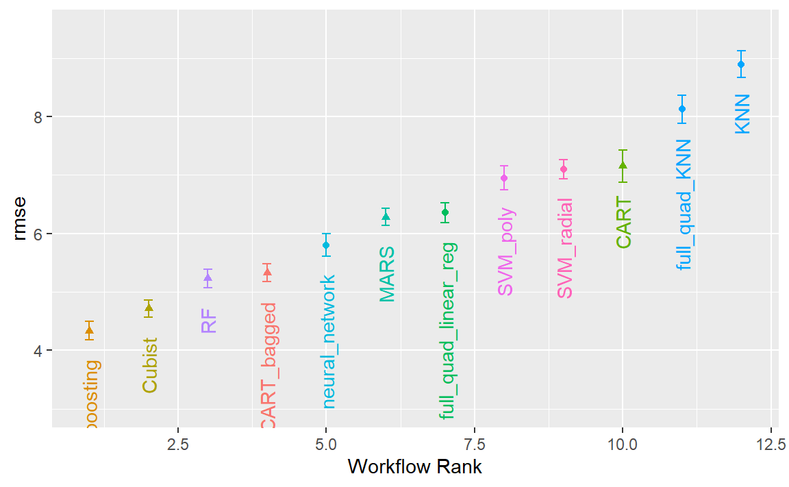
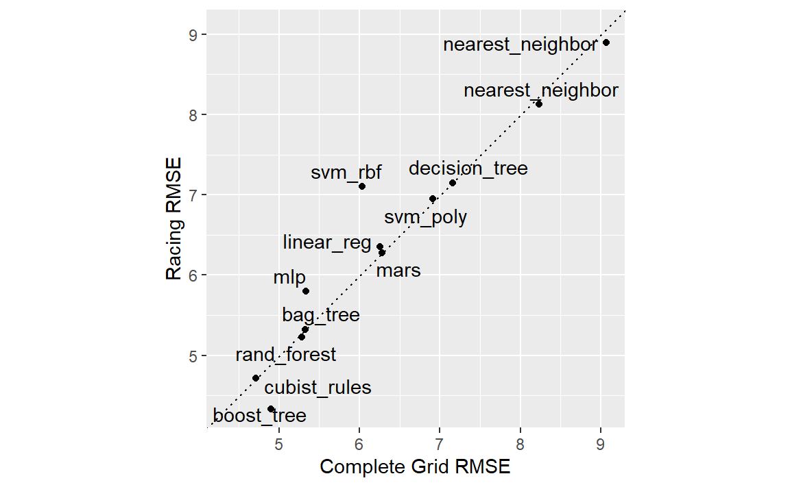
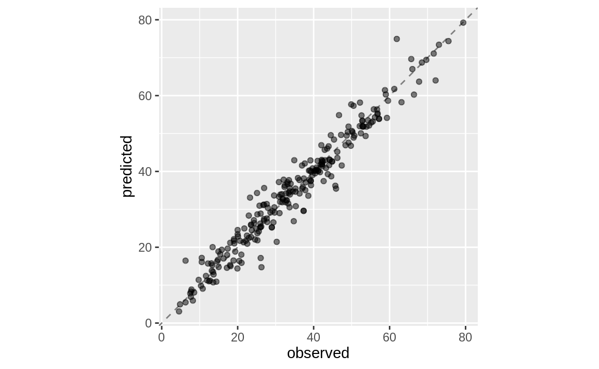

library(tidymodels)
#> ── Attaching packages ─────────────────────────────────── tidymodels 1.4.1 ──
#> ✔ broom 1.0.11 ✔ recipes 1.3.1
#> ✔ dials 1.4.2 ✔ rsample 1.3.1
#> ✔ dplyr 1.1.4 ✔ tailor 0.1.0
#> ✔ ggplot2 4.0.1 ✔ tidyr 1.3.1
#> ✔ infer 1.0.9 ✔ tune 2.0.1
#> ✔ modeldata 1.5.1 ✔ workflows 1.3.0
#> ✔ parsnip 1.4.0 ✔ workflowsets 1.1.1
#> ✔ purrr 1.2.0 ✔ yardstick 1.3.2
#> ── Conflicts ────────────────────────────────────── tidymodels_conflicts() ──
#> ✖ purrr::discard() masks scales::discard()
#> ✖ dplyr::filter() masks stats::filter()
#> ✖ dplyr::lag() masks stats::lag()
#> ✖ recipes::step() masks stats::step()
tidymodels_prefer()
data(concrete, package = "modeldata")
glimpse(concrete)
#> Rows: 1,030
#> Columns: 9
#> $ cement <dbl> 540.0, 540.0, 332.5, 332.5, 198.6, 266.0, 380.…
#> $ blast_furnace_slag <dbl> 0.0, 0.0, 142.5, 142.5, 132.4, 114.0, 95.0, 95…
#> $ fly_ash <dbl> 0, 0, 0, 0, 0, 0, 0, 0, 0, 0, 0, 0, 0, 0, 0, 0…
#> $ water <dbl> 162, 162, 228, 228, 192, 228, 228, 228, 228, 2…
#> $ superplasticizer <dbl> 2.5, 2.5, 0.0, 0.0, 0.0, 0.0, 0.0, 0.0, 0.0, 0…
#> $ coarse_aggregate <dbl> 1040.0, 1055.0, 932.0, 932.0, 978.4, 932.0, 93…
#> $ fine_aggregate <dbl> 676.0, 676.0, 594.0, 594.0, 825.5, 670.0, 594.…
#> $ age <int> 28, 28, 270, 365, 360, 90, 365, 28, 28, 28, 90…
#> $ compressive_strength <dbl> 79.99, 61.89, 40.27, 41.05, 44.30, 47.03, 43.7…15 Screening Many Models
我们在第7章介绍了工作流集合，并在第11章展示了如何将其与重新采样的数据集结合使用。在本章中，我们将更详细地探讨这些多模型工作流集合，并介绍一个能够体现其实际价值的用例。
对于那些包含尚未被充分理解的新数据集的项目，数据从业者可能需要筛选多种模型与预处理方法的组合。通常情况下，人们对哪种方法最适合处理全新数据集几乎一无所知，甚至完全缺乏先验知识。一个好的策略是，初期先花精力尝试多种建模方法，确定哪种效果最佳，然后再投入更多时间对少数几个模型进行微调和优化。
工作流集提供了一个用户界面，用于创建和管理这一流程。我们还将演示如何利用第15.4节中讨论的竞赛方法，高效地评估这些模型。
Modeling Concrete Mixture Strength
为了演示如何筛选多个模型工作流，我们将以《Applied Predictive Modeling》（M. Kuhn 和 Johnson，2013）中的混凝土混合料数据为例。该书第10章展示了利用配料成分作为预测变量，预测混凝土混合料抗压强度的模型。书中评估了多种不同预测变量组合及预处理需求的模型。那么，工作流集合如何使这种大规模的模型测试过程变得更加简便呢？
首先，让我们定义数据的分割和重采样方案。
compressive_strength列是结果列，age预测变量表示混凝土试样在测试时的龄期（以天为单位，因为混凝土会随时间增强），而其他预测变量，如cement和water，则分别以每立方米千克为单位，代表混凝土的组成成分。
在本数据集的某些案例中，同一款混凝土配比曾被多次测试。我们不建议将这些重复配比作为独立的数据点纳入，因为它们可能同时分布于训练集和测试集中。如果这样做，可能会人为地夸大我们的性能评估结果。为解决这一问题，我们将采用每种混凝土配比的平均抗压强度进行建模：
让我们按照默认的3:1训练集与测试集比例分割数据，并对训练集进行5次重复的10折交叉验证重采样：
一些模型（尤其是神经网络、KNN和支持向量机）需要经过中心化和标准化处理的预测变量，因此某些模型的工作流程将要求包含这些预处理步骤的recipe对象。而对于其他模型，采用传统的响应面设计模型扩展方法（即二次项及两两交互作用）则更为合适。为此，我们制定了两个recipe对象：
normalized_rec <-
recipe(compressive_strength ~ ., data = concrete_train) %>%
step_normalize(all_predictors())
poly_recipe <-
normalized_rec %>%
step_poly(all_predictors()) %>%
step_interact(~ all_predictors():all_predictors())对于模型，我们使用Parsnip加载项来创建一组模型规范：
library(rules)
library(baguette)
linear_reg_spec <-
linear_reg(penalty = tune(), mixture = tune()) %>%
set_engine("glmnet")
nnet_spec <-
mlp(hidden_units = tune(), penalty = tune(), epochs = tune()) %>%
set_engine("nnet", MaxNWts = 2600) %>%
set_mode("regression")
mars_spec <-
mars(prod_degree = tune()) %>% #<- use GCV to choose terms
set_engine("earth") %>%
set_mode("regression")
svm_r_spec <-
svm_rbf(cost = tune(), rbf_sigma = tune()) %>%
set_engine("kernlab") %>%
set_mode("regression")
svm_p_spec <-
svm_poly(cost = tune(), degree = tune()) %>%
set_engine("kernlab") %>%
set_mode("regression")
knn_spec <-
nearest_neighbor(neighbors = tune(), dist_power = tune(), weight_func = tune()) %>%
set_engine("kknn") %>%
set_mode("regression")
cart_spec <-
decision_tree(cost_complexity = tune(), min_n = tune()) %>%
set_engine("rpart") %>%
set_mode("regression")
bag_cart_spec <-
bag_tree() %>%
set_engine("rpart", times = 50L) %>%
set_mode("regression")
rf_spec <-
rand_forest(mtry = tune(), min_n = tune(), trees = 1000) %>%
set_engine("ranger") %>%
set_mode("regression")
xgb_spec <-
boost_tree(
tree_depth = tune(), learn_rate = tune(), loss_reduction = tune(),
min_n = tune(), sample_size = tune(), trees = tune()
) %>%
set_engine("xgboost") %>%
set_mode("regression")
cubist_spec <-
cubist_rules(committees = tune(), neighbors = tune()) %>%
set_engine("Cubist")M. Kuhn 和 Johnson（2013）的分析指出，神经网络的隐藏层最多应包含27个单元。extract_parameter_set_dials()函数用于提取参数集，我们对其进行了修改，以确保参数范围正确：
nnet_param <-
nnet_spec %>%
extract_parameter_set_dials() %>%
update(hidden_units = hidden_units(c(1, 27)))我们如何将这些模型与其对应的算法相匹配、进行调优，然后高效地评估其性能？一套工作流方案为此提供了答案。
Creating the Workflow Set
工作流集将预处理程序和模型规范的命名列表组合成一个对象，其中包含多个工作流。预处理程序共有三种可能的类型：
- 标准的R公式
- 预处理前的recipe对象（用于估计或准备数据）
- 类似dplyr风格的选择器，用于选择因变量和自变量
作为第一个工作流集示例，让我们将仅对自变量进行标准化的配方与那些要求自变量处于相同单位的非线性模型结合起来：
normalized <-
workflow_set(
preproc = list(normalized = normalized_rec),
models = list(
SVM_radial = svm_r_spec, SVM_poly = svm_p_spec,
KNN = knn_spec, neural_network = nnet_spec
)
)
normalized
#> # A workflow set/tibble: 4 × 4
#> wflow_id info option result
#> <chr> <list> <list> <list>
#> 1 normalized_SVM_radial <tibble [1 × 4]> <opts[0]> <list [0]>
#> 2 normalized_SVM_poly <tibble [1 × 4]> <opts[0]> <list [0]>
#> 3 normalized_KNN <tibble [1 × 4]> <opts[0]> <list [0]>
#> 4 normalized_neural_network <tibble [1 × 4]> <opts[0]> <list [0]>由于只有一个预处理器，此函数会使用该值创建一组工作流。如果预处理器包含多个条目，该函数将生成所有预处理器与模型的组合。
wflow_id列会自动创建，但可通过调用mutate()进行修改。info列包含一个tibble，其中存储了一些标识符和工作流对象。该工作流可被提取：
normalized %>% extract_workflow(id = "normalized_KNN")
#> ══ Workflow ═════════════════════════════════════════════════════════════════
#> Preprocessor: Recipe
#> Model: nearest_neighbor()
#>
#> ── Preprocessor ─────────────────────────────────────────────────────────────
#> 1 Recipe Step
#>
#> • step_normalize()
#>
#> ── Model ────────────────────────────────────────────────────────────────────
#> K-Nearest Neighbor Model Specification (regression)
#>
#> Main Arguments:
#> neighbors = tune()
#> weight_func = tune()
#> dist_power = tune()
#>
#> Computational engine: kknnoption列是我们在评估工作流时用于指定任何参数的占位符。当使用来自tune或finetune包中的函数对工作流进行调优（或重采样）时，将采用此参数。例如，要添加神经网络参数对象：
normalized <-
normalized %>%
option_add(param_info = nnet_param, id = "normalized_neural_network")
normalized
#> # A workflow set/tibble: 4 × 4
#> wflow_id info option result
#> <chr> <list> <list> <list>
#> 1 normalized_SVM_radial <tibble [1 × 4]> <opts[0]> <list [0]>
#> 2 normalized_SVM_poly <tibble [1 × 4]> <opts[0]> <list [0]>
#> 3 normalized_KNN <tibble [1 × 4]> <opts[0]> <list [0]>
#> 4 normalized_neural_network <tibble [1 × 4]> <opts[1]> <list [0]>result列是调优或重采样函数输出的占位符。
对于其他非线性模型，我们来创建另一套工作流，其中使用dplyr选择器来指定响应变量和预测变量：
model_vars <-
workflow_variables(
outcomes = compressive_strength,
predictors = everything()
)
no_pre_proc <-
workflow_set(
preproc = list(simple = model_vars),
models = list(
MARS = mars_spec, CART = cart_spec, CART_bagged = bag_cart_spec,
RF = rf_spec, boosting = xgb_spec, Cubist = cubist_spec
)
)
no_pre_proc
#> # A workflow set/tibble: 6 × 4
#> wflow_id info option result
#> <chr> <list> <list> <list>
#> 1 simple_MARS <tibble [1 × 4]> <opts[0]> <list [0]>
#> 2 simple_CART <tibble [1 × 4]> <opts[0]> <list [0]>
#> 3 simple_CART_bagged <tibble [1 × 4]> <opts[0]> <list [0]>
#> 4 simple_RF <tibble [1 × 4]> <opts[0]> <list [0]>
#> 5 simple_boosting <tibble [1 × 4]> <opts[0]> <list [0]>
#> 6 simple_Cubist <tibble [1 × 4]> <opts[0]> <list [0]>最后，我们用适当的模型组装包含非线性项和交互作用的集合：
这些对象是带有额外“workflow_set”类别的tibble。行绑定不会影响集合的状态，其结果本身也是一个工作流集合：
all_workflows <-
bind_rows(no_pre_proc, normalized, with_features) %>%
# Make the workflow ID's a little more simple:
mutate(wflow_id = gsub("(simple_)|(normalized_)", "", wflow_id))
all_workflows
#> # A workflow set/tibble: 12 × 4
#> wflow_id info option result
#> <chr> <list> <list> <list>
#> 1 MARS <tibble [1 × 4]> <opts[0]> <list [0]>
#> 2 CART <tibble [1 × 4]> <opts[0]> <list [0]>
#> 3 CART_bagged <tibble [1 × 4]> <opts[0]> <list [0]>
#> 4 RF <tibble [1 × 4]> <opts[0]> <list [0]>
#> 5 boosting <tibble [1 × 4]> <opts[0]> <list [0]>
#> 6 Cubist <tibble [1 × 4]> <opts[0]> <list [0]>
#> # ℹ 6 more rowsTuning and Evaluating the Models
几乎所有all_workflows中的成员都包含调优参数。为了评估它们的性能，我们可以使用标准的调优或重采样函数（例如，tune_grid()等）。workflow_map()函数会将同一函数应用到集合中所有工作流；默认情况下，它使用tune_grid()。
在这个示例中，网格搜索被应用于每个工作流，最多使用25个不同的参数候选值。在每次执行tune_grid()时，都有一组通用选项可供使用。例如，在以下代码中，我们将为每个工作流使用相同的重采样和控制对象，并指定网格大小为25。此外，workflow_map()函数还包含一个名为seed的额外参数，用于确保每次执行tune_grid()时都能消耗相同的随机数。
grid_ctrl <-
control_grid(
save_pred = TRUE,
parallel_over = "everything",
save_workflow = TRUE
)
grid_results <-
all_workflows %>%
workflow_map(
seed = 1503,
resamples = concrete_folds,
grid = 25,
control = grid_ctrl
)结果显示，option列和result列已更新：
grid_results
#> # A workflow set/tibble: 12 × 4
#> wflow_id info option result
#> <chr> <list> <list> <list>
#> 1 MARS <tibble [1 × 4]> <opts[3]> <tune[+]>
#> 2 CART <tibble [1 × 4]> <opts[3]> <tune[+]>
#> 3 CART_bagged <tibble [1 × 4]> <opts[3]> <rsmp[+]>
#> 4 RF <tibble [1 × 4]> <opts[3]> <tune[+]>
#> 5 boosting <tibble [1 × 4]> <opts[3]> <tune[+]>
#> 6 Cubist <tibble [1 × 4]> <opts[3]> <tune[+]>
#> # ℹ 6 more rows选项列现在包含了我们在workflow_map()调用中使用的所有选项。这使得我们的结果具有可重复性。在result列中，“tune[+]”和“rsmp[+]”标记表示该对象未出现任何问题；而像“tune[x]”这样的值，则表明由于某种原因，所有模型均未能通过测试。
有一些便捷函数可用于检查结果，例如grid_results。rank_results()函数会根据某种性能指标对模型进行排序。默认情况下，它使用指标集合中的第一个指标（本例中为RMSE）。让我们使用filter()仅查看RMSE：
grid_results %>%
rank_results() %>%
filter(.metric == "rmse") %>%
select(model, .config, rmse = mean, rank)
#> # A tibble: 252 × 4
#> model .config rmse rank
#> <chr> <chr> <dbl> <int>
#> 1 cubist_rules Preprocessor1_Model24 4.71 1
#> 2 cubist_rules Preprocessor1_Model21 4.72 2
#> 3 cubist_rules Preprocessor1_Model10 4.76 3
#> 4 cubist_rules Preprocessor1_Model23 4.78 4
#> 5 cubist_rules Preprocessor1_Model16 4.78 5
#> 6 cubist_rules Preprocessor1_Model19 4.78 6
#> # ℹ 246 more rows默认情况下，该函数会对所有候选集进行排序；因此，同一个模型可能会在输出中多次出现。此外，还可通过名为“select_best”的选项，按模型的最佳调参组合对其进行排序。
autoplot()方法用于绘制排名；它还有一个select_best参数。 Figure 1 中的图表展示了每个模型的最佳结果，生成方式如下：
autoplot(
grid_results,
rank_metric = "rmse", # <- how to order models
metric = "rmse", # <- which metric to visualize
select_best = TRUE # <- one point per workflow
) +
geom_text(aes(y = mean - 1 / 2, label = wflow_id), angle = 90, hjust = 1) +
lims(y = c(3.5, 9.5)) +
theme(legend.position = "none")

如果您想查看特定模型的调参结果，例如 Figure 2 ，id参数可从wflow_id列中选取一个值，以指定要绘制的模型：
autoplot(grid_results, id = "Cubist", metric = "rmse")

autoplot() results for the Cubist model contained in the workflow set.
此外，还有collect_predictions()和collect_metrics()的方法。
我们使用混凝土混合料数据进行的示例模型筛选共拟合了12,600个模型。通过2核心并行操作，整个估算过程耗时约2小时。
Efficiently Screening Models
一种高效筛选大量模型的有效方法，是使用第13.5.5节中描述的竞速法。通过设置工作流集，我们可以利用workflow_map()函数来实施这一竞速策略。请注意，当我们以管道方式将工作流集导入后，所使用的参数正是应用于这些工作流的函数；在此情形下，我们可以选择“tune_race_anova”作为目标函数。此外，我们还需传递一个适当的控制对象；否则，选项将与前一节代码中的设置相同。
library(finetune)
race_ctrl <-
control_race(
save_pred = TRUE,
parallel_over = "everything",
save_workflow = TRUE
)
race_results <-
all_workflows %>%
workflow_map(
"tune_race_anova",
seed = 1503,
resamples = concrete_folds,
grid = 25,
control = race_ctrl
)新的对象看起来非常相似，尽管result列中的元素显示值为“race[+]”，这表明它是一种不同类型的对象：
race_results
#> # A workflow set/tibble: 12 × 4
#> wflow_id info option result
#> <chr> <list> <list> <list>
#> 1 MARS <tibble [1 × 4]> <opts[3]> <race[+]>
#> 2 CART <tibble [1 × 4]> <opts[3]> <race[+]>
#> 3 CART_bagged <tibble [1 × 4]> <opts[3]> <rsmp[+]>
#> 4 RF <tibble [1 × 4]> <opts[3]> <race[+]>
#> 5 boosting <tibble [1 × 4]> <opts[3]> <race[+]>
#> 6 Cubist <tibble [1 × 4]> <opts[3]> <race[+]>
#> # ℹ 6 more rows同样的有用功能也适用于该对象，以查询结果；事实上，Figure 3 中所示的基本autoplot()方法生成的趋势与 Figure 1 相似。这是通过以下方式实现的：

总体而言，该竞速方法共估算出1050个模型，占完整网格中12600个模型总数的8.33%。因此，该竞速方法的速度提升了4.8倍。
我们是否得到了相似的结果？对于这两个对象，我们对结果进行排序，然后将它们合并，并在 Figure 4 中相互对比绘制。
matched_results <-
rank_results(race_results, select_best = TRUE) %>%
select(wflow_id, .metric, race = mean, config_race = .config) %>%
inner_join(
rank_results(grid_results, select_best = TRUE) %>%
select(wflow_id, .metric,
complete = mean,
config_complete = .config, model
),
by = c("wflow_id", ".metric"),
) %>%
filter(.metric == "rmse")
library(ggrepel)
matched_results %>%
ggplot(aes(x = complete, y = race)) +
geom_abline(lty = 3) +
geom_point() +
geom_text_repel(aes(label = model)) +
coord_obs_pred() +
labs(x = "Complete Grid RMSE", y = "Racing RMSE")

尽管在仅41.67%的模型中，Racing方法选择的候选参数与完整网格完全一致，但这些由Racing方法选出的模型性能指标却几乎相同。其中，RMSE值的相关性高达0.968，而秩相关性更是达到0.951。这表明，在单个模型内部，存在多种调参组合，它们的预测结果几乎完全一致。
Finalizing a Model
正如我们在前几章中所展示的，选择最终模型并将其拟合到训练集上的过程非常简单。首先，我们需要选定一种工作流程来确定最终模型。由于提升树模型表现良好，我们将从中挑选出来，用数值上最优的参数设置进行更新，然后将其拟合到训练集上：
best_results <-
race_results %>%
extract_workflow_set_result("boosting") %>%
select_best(metric = "rmse")
best_results
#> # A tibble: 1 × 7
#> trees min_n tree_depth learn_rate loss_reduction sample_size
#> <int> <int> <int> <dbl> <dbl> <dbl>
#> 1 1635 6 5 0.0142 0.0000000500 0.919
#> # ℹ 1 more variable: .config <chr>
boosting_test_results <-
race_results %>%
extract_workflow("boosting") %>%
finalize_workflow(best_results) %>%
last_fit(split = concrete_split)我们可以查看测试集的指标结果，并在 Figure 5 中可视化预测结果。
collect_metrics(boosting_test_results)
#> # A tibble: 2 × 4
#> .metric .estimator .estimate .config
#> <chr> <chr> <dbl> <chr>
#> 1 rmse standard 3.50 pre0_mod0_post0
#> 2 rsq standard 0.951 pre0_mod0_post0boosting_test_results %>%
collect_predictions() %>%
ggplot(aes(x = compressive_strength, y = .pred)) +
geom_abline(color = "gray50", lty = 2) +
geom_point(alpha = 0.5) +
coord_obs_pred() +
labs(x = "observed", y = "predicted")

我们在这里看到，这些混凝土混合料的实测抗压强度与预测值之间高度吻合。
Chapter Summary
数据从业者常常需要针对手头的任务考虑大量可能的建模方法，尤其是在面对新数据集，或对哪种建模策略最有效尚缺乏了解的情况下。本章介绍了如何利用工作流集合，在这种情境下同时探索多种模型或特征工程策略。与逐一拟合所有候选模型相比，竞速法能够更高效地对模型进行排序。